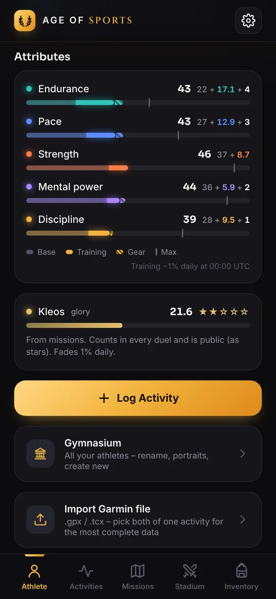
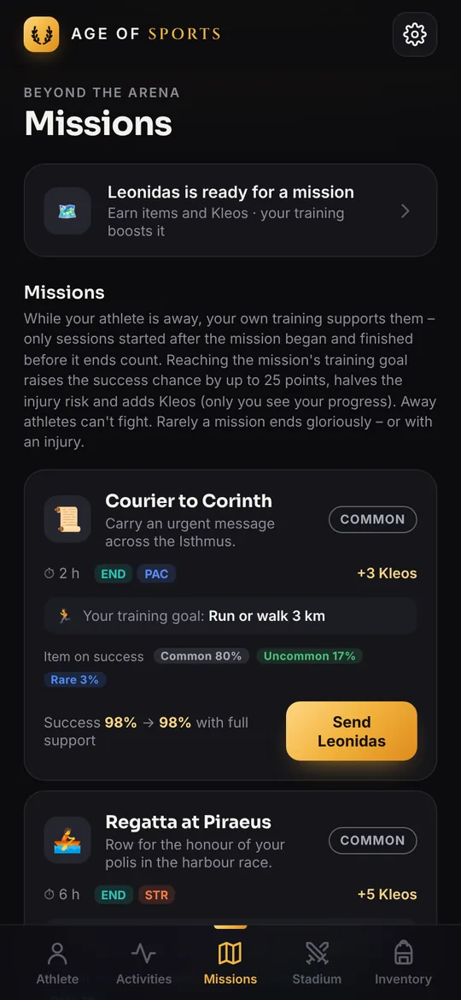
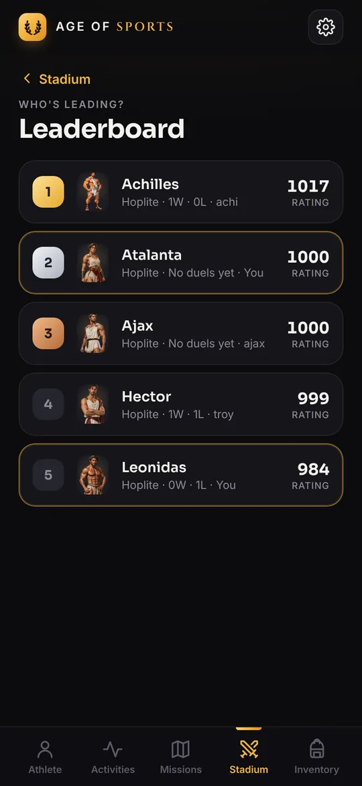

Whitepaper
Train like an Olympian.
Level up your legend.
Age of Sports is a train-to-play fitness RPG. Your real training makes an ancient athlete stronger. Athletes earn glory on missions and prove themselves in the arena – no tokens, no pay-to-win, just your effort.


Screenshots with sample data.
01Abstract
Move-to-earn apps showed that game mechanics can get people moving. Many of them, however, tied that motivation to tradable crypto tokens and NFTs, so the reason to train depended on market prices – and faded when prices did.
Age of Sports keeps what works – a game layer on top of real activity – and removes what doesn't. You log runs, rides, walks, rowing, strength workouts and sleep. That activity earns Fitness Points and trains the attributes of your athlete. Athletes go on missions to win equipment and Kleos (glory) and fight duels in the arena, whose results alone decide the public leaderboard.
The progression model is built to reward consistency over volume: training gains slow down as an athlete approaches its potential, and they fade if you stop. Nothing can be bought.
02The problem
Motivation fades
Most fitness trackers show numbers, but numbers alone rarely keep people going after the first weeks.
Rewards become speculation
Token-based move-to-earn models link the reason to train to prices, entry costs and market cycles.
Leaderboards favour volume
Ranking by kilometres or minutes rewards whoever has the most time, not whoever trains smartly and regularly.
03Vision & principles
Age of Sports turns training into the story of an ancient athlete – from novice to legend of the stadium. Four principles guide every design decision:
Real effort only
Athletic attributes grow exclusively from real activity. Missions and items add on top, but never replace training.
Consistency beats volume
Diminishing gains and a daily fade make regular training more valuable than occasional extremes.
Fair by design
Every athlete starts with the same base total. Items are earned, never bought. The leaderboard ranks arena results, not raw data.
Private by default
Your activities, exact values and progress stay yours. Others only see your athlete as a coarse, game-level profile.
04The core loop
↺ Training fades without practice – so the loop starts again tomorrow.
05Athletes & attributes
Each account manages a roster of athletes in the Gymnasium. One athlete is active at a time; activities are logged for the active athlete. Every athlete has five athletic attributes and one glory value:
| Attribute | Trained mainly by | Matters most in |
|---|---|---|
| Endurance | Running, cycling, rowing, walking | Dolichos, long missions |
| Pace | Running, cycling, burpees | Stadion Sprint |
| Strength | Strength exercises, rowing | Wrestling, Pankration |
| Mental power | Sleep, walking, running | Wrestling, Delphi pilgrimage |
| Discipline | Every activity, a little | Spartan Agoge, Dolichos |
| Kleos | Missions (not sport) | Every duel and mission |
An attribute is the sum of three parts:
attribute = base points + training points + equipment bonus- Base points are assigned once when an athlete is created: 22–38 per attribute, always 150 in total. Every athlete is equally strong overall, just shaped differently – a sprinter, a wrestler, an all-rounder.
- Training points come from real activity and change daily (see section 7).
- Equipment bonus comes from items worn in four slots (see section 8).

06Activities & Fitness Points
Activities can be entered manually or imported from Garmin GPX/TCX files. Supported types: run, ride, walk, rowing, strength and sleep. Strength workouts contain individual bodyweight exercises with repetitions. Every activity earns Fitness Points (FP):
| Component | FP |
|---|---|
| Distance | 10 per km |
| Duration | 1 per minute |
| Average heart rate | 0.3 per bpm |
| Elevation gain | 0.2 per m |
| Sleep (max. 9 h) | 5 per hour |
| Strength exercise | FP per rep |
|---|---|
| Sit-up | 0.4 |
| Push-up | 0.6 |
| Burpee | 1.0 |
| Pull-up | 1.5 |
| Other | 0.5 |
Example: a 5 km run in 30 minutes earns 80 FP; 50 push-ups and 10 pull-ups in 15 minutes earn 60 FP.

Levels
FP accumulate over an athlete's lifetime and determine its level. Each level needs 100 FP more than the previous one:
FP needed for the next level = 300 + 100 × (level − 1)Level 2 at 300 FP · Level 5 at 1,500 FP · Level 10 at 6,300 FP. Levels unlock harder missions. Level and FP are private – they are your personal progress, not a public ranking.
07The training model
Training points model a real training effect: quick gains at the start, slower gains as you approach your potential, and a gradual loss when you stop.
Gain
Each activity produces a training stimulus for every attribute it trains: its FP components multiplied by attribute weights (for example, a run trains Endurance at 1.0 and Pace at 0.7; rowing trains Endurance and Strength at 0.8 each). The stimulus moves training points towards a maximum:
gain = (max − current) × (1 − e−stimulus / 2000) with max = 1.5 × base pointsA higher base therefore also means a higher potential. Gains shrink automatically as an attribute nears its maximum.
Fade
At 00:00 UTC every day, every attribute loses 1 % of the training points it has at that moment. During the day, values only change through training.
Reference (base 30, maximum +45): daily 50 push-ups and three 5 km runs per week
| After | 1 week | 4 weeks | 8 weeks | +4 weeks break | +8 weeks break |
|---|---|---|---|---|---|
| Strength training points | ≈ +6 | ≈ +16 | ≈ +22 | ≈ +17 | ≈ +13 |
Training points are not stored but recalculated from the activity history, so they are identical on every device and stay correct when past activities are edited.
08Equipment & item tiers
Athletes wear items in four slots: Clothing, Equipment, Supplies and a fourth slot for charms and wreaths. The inventory is shared across the account; an item can be worn by one athlete at a time. Reward items carry attribute bonuses that count in missions and the arena – capped at +6 per attribute so training always matters more than gear.
| Tier | Typical total bonus | Examples |
|---|---|---|
| Common | ≈ +2 | Messenger Sandals, Rowing Gloves, Honey Water |
| Uncommon | ≈ +3 | Delphic Amulet, Spartan Hand Wraps, Fine Linen Chiton |
| Rare | ≈ +5 | Isthmian Pine Wreath, Thessalian Javelin |
| Epic | ≈ +7 | Golden Laurel, Olympic Olive Crown |
| Legendary | ≈ +9 | Talaria of Hermes, Ambrosia of the Gods |

Every athlete starts with a basic set; all other items must be earned on missions. New items join the reward pool of their tier automatically, so the catalogue can grow without changing the mission system.
09Missions & Kleos
Athletes can be sent on missions lasting from two hours to four days. While away, an athlete cannot fight in the arena. Each mission has a level requirement, an attribute focus, a difficulty and a tier derived from how demanding it is (difficulty and duration).
| Mission | Duration | Level | Focus | Tier | Training goal |
|---|---|---|---|---|---|
| 📜 Courier to Corinth | 2 h | 1 | END PAC | Common | Run or walk 3 km |
| 🚣 Regatta at Piraeus | 6 h | 2 | END STR | Common | Train 30 min |
| 🏔️ Pilgrimage to Delphi | 1 d | 3 | END MEN | Uncommon | Run or walk 10 km |
| 🛡️ Spartan Agoge | 2 d | 5 | DIS MEN | Rare | 200 strength reps, 2 active days |
| 🌲 Isthmian Games | 3 d | 7 | all | Epic | 3 different sports, 90 min |
| 🦁 Nemean Games | 4 d | 10 | STR END | Legendary | 30 km, 300 strength reps |
Your training supports the mission
Each mission comes with a training goal for you. Only sessions that start after the mission began and end before it is over count. The share of the goal you reach is the support level (0–100 %). At full support:
- success chance +25 percentage points (capped at 98 %),
- injury risk halved,
- +3 percentage points chance of a glorious result,
- +25 % Kleos.
The duration never changes. Progress towards the goal is visible only to you.

Outcomes
| Result | Frequency | Effect |
|---|---|---|
| 🌟 Glorious | rare (≈ 1–4 %) | double Kleos, item one tier better |
| ✅ Success | depends on strength vs. difficulty | Kleos and one item of a rolled tier |
| Failure | depends on strength vs. difficulty | a quarter of the Kleos |
| 🩹 Injury | rare (≈ 1–4 %) | −10 % attributes for 3 days, unavailable for 1–2 days |
The success chance follows the ratio of the athlete's weighted score (attributes, equipment, Kleos) to the mission difficulty. On success, the item tier is rolled from the mission's loot table – mostly the mission's own tier, sometimes one below or above:
| Mission tier | Common | Uncommon | Rare | Epic | Legendary |
|---|---|---|---|---|---|
| Common | 80 % | 17 % | 3 % | – | – |
| Uncommon | 20 % | 62 % | 15 % | 3 % | – |
| Rare | 5 % | 22 % | 58 % | 13 % | 2 % |
| Epic | – | 8 % | 27 % | 55 % | 10 % |
| Legendary | – | – | 10 % | 35 % | 55 % |
Kleos
Kleos – the glory an ancient hero earned through deeds – is a separate value earned on missions. It approaches a maximum of 50, fades by 1 % every day at 00:00 UTC, and adds experience to every duel and mission (+0.2 × Kleos to the score). Kleos is public as a 0–5 star rating.
10The arena
In the stadium, athletes challenge each other in classical disciplines. A discipline is drawn at random when a challenge is issued, so opponents know what they are signing up for:
| Discipline | Attribute weights |
|---|---|
| 🏃 Stadion Sprint | PAC 60 % END 20 % DIS 20 % |
| 🏛️ Dolichos | END 60 % DIS 25 % MEN 15 % |
| 🤼 Pale Wrestling | STR 55 % MEN 25 % END 20 % |
| 🥊 Pankration | STR 40 % PAC 20 % END 20 % MEN 20 % |
| 🎖️ Pentathlon | all five attributes, 20 % each |
The higher performance wins; the stronger athlete usually wins, but not always. Challengers see their estimated odds before accepting.
Rating & titles
Results feed an Elo rating (start 1000, K = 32): beating a stronger opponent earns more, losing costs points. The rating determines the athlete's title:
| Title | Novice | Hoplite | Veteran | Champion | Legend |
|---|---|---|---|---|---|
| Rating | < 950 | 950–1049 | 1050–1149 | 1150–1249 | ≥ 1250 |

Each athlete can fight up to 5 duels per day and keep one open challenge. The public leaderboard ranks athletes by arena rating only – not by kilometres, minutes or Fitness Points.
11Fairness & anti-cheat
- Equal start: every athlete has the same base total (150).
- Bounded progress: training points saturate at 1.5 × base and fade daily; equipment bonuses are capped; Kleos saturates at 50.
- No purchases: nothing that affects strength can be bought.
- Volume isn't everything: the leaderboard reflects arena results, daily duel limits prevent grinding.
12Privacy & data
Visible to others
- Athlete name and portrait
- Arena title, rating and duel record
- Coarse 1–5 star profile per attribute and Kleos
- Discipline score inside an open challenge
Private
- All activities, distances, times, heart rate, sleep
- Exact attribute values and training points
- Level and Fitness Points
- Mission goals and support progress
Data is stored in Google Firebase (authentication and Firestore). Activities are entered manually or imported from files exported by the user. Integrations with third-party platforms will only be added if their terms allow the way data is used here.
13Economy
Unlike token-based move-to-earn projects, Age of Sports has no cryptocurrency, no NFTs and no in-app purchases. Its values are purely in-game:
| Value | Source | Used for | Visibility |
|---|---|---|---|
| Fitness Points | every activity | level, unlocking missions | private |
| Training points | activities (fade daily) | attributes | private (stars public) |
| Items | missions | attribute bonuses | worn items |
| Kleos | missions (fades daily) | bonus in duels and missions | stars public |
| Arena rating | duels | title, leaderboard rank | public |
This keeps the motivation where it belongs: in your own progress and in friendly competition.
14Roadmap
Foundation Done
- Activity log incl. sleep, strength exercises and Garmin GPX/TCX import
- Fitness Points, levels, base + training attributes with daily fade
- Multiple athletes, portraits, equipment slots, tiered items
- Missions with training goals, Kleos, arena duels with Elo leaderboard
- Modern mobile UI, installable as PWA; separate staging environment
Next Planned
- Server-side duel and mission resolution, validated attributes
- Weekly public snapshot of the arena profile
- "Arena & privacy" settings with explicit opt-in to compete
- Scalable data model (activities in their own collection)
- Item artwork and new athlete portraits
Later Ideas
- Festival series – Isthmian, Nemean, Pythian and Olympic Games – with the title "Periodonikes"
- Labours of Heracles for high-level athletes, relay missions with several athletes
- Optional activity imports from third-party platforms (subject to their terms)
- Native app wrapper with background GPS tracking
15Disclaimer
This whitepaper describes an early-stage, non-commercial project and its current game design. All values, formulas and features are subject to change and may be adjusted as the game is balanced. Age of Sports is not a financial product and offers no monetary rewards. The app does not provide medical advice; consult a professional before starting a new training programme and listen to your body.